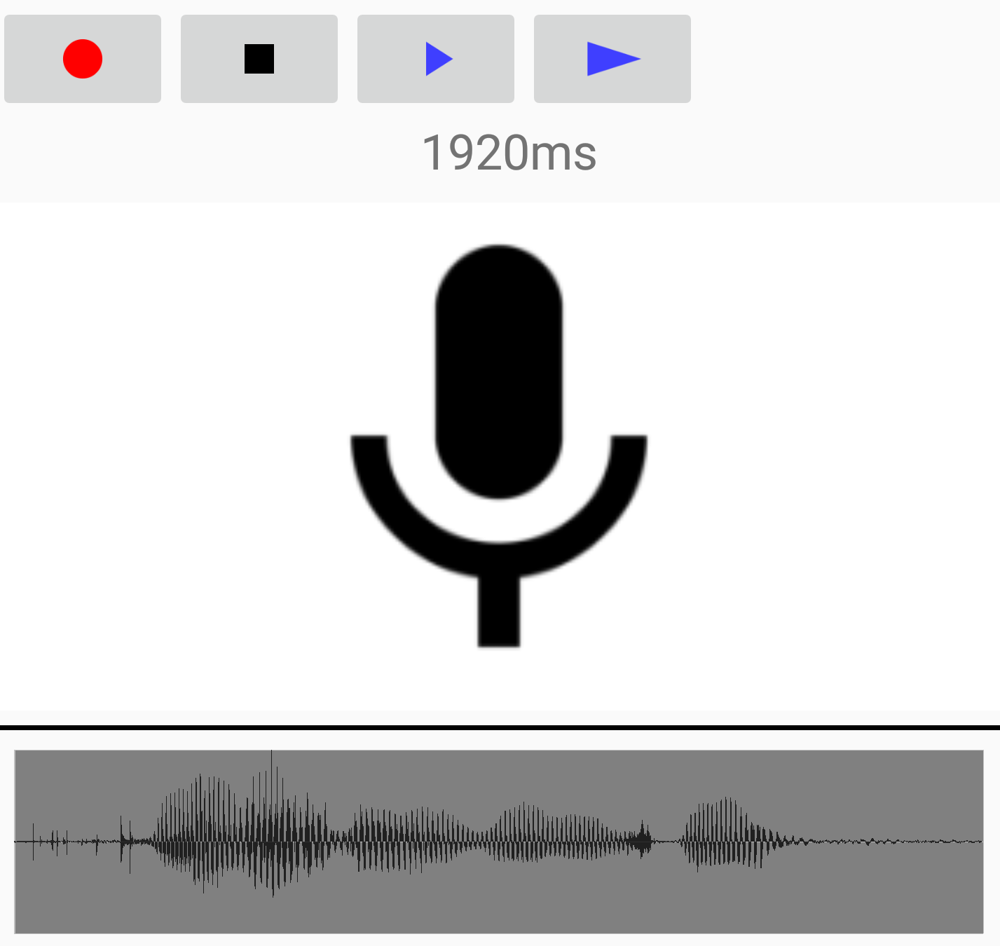
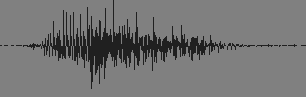

Record up to 5 seconds from the microphone
Playback normally
Playback at half speed
Version 1.11 - Feb 2018
MyGrainFX uses Granular Synthesis to make wonderful sounds from your own voice recordings. It uses different ways to chop up the recordings into little segments called sound grains. Grains are larger than the digital samples normally manipulated by computers. Each grain is like a little chunk of audio, long enough to have particular, unique sound, but short enough that adding or removing one here or there does not disturb the overall continuity of the recoding.
If you google Granular Synthesis you will find hundreds of articles on the subject.
Here is the Wikipedia article on Granular Synthesis.
Record up to 5 seconds from the microphone
 Stop recording, or stop any playback
Stop recording, or stop any playback
Playback normally
Playback at half speed
Below the controls is the recording length in 1/1000 seconds (ms). In the image above, the recording is 1.76 seconds.
When recording starts, most of the controls are replaced with a
microphone

Select the Atomic type: grains are all of equal length
Select the Smooth type: grains have different lengths and sound smoother together
Play a little melody
Play grains randomly while holding down
Change size of grains. The size of the grains is shown above in ms and frequency in Hz.
Note: Changing the size of the grains when the Smooth algorithm is selected can take a long time, so the size updates only when you release the control.
Play stretching time
Play shifting pitch
Control time stretch or pitch shift by repeating or dropping grains.
Move the control to the left speed up or raise the pitch, to the right to slow down or lower the pitch.

Touch and hold anywhere on graph to play grains. Move left and right to "scratch"
like a DJ.
Both the Robot and Sing-Song Voice are a direct result of grain size. Atomic grains are all the same size, so when they are played back-to-back, the pitch corresponding to the grain size sounds as a droning tone. Smooth grains are not all the same size, and the small variations in length create similar variations in pitch which "sings" when played.
The melody play works best with short samples less than 1/2 a second in length.